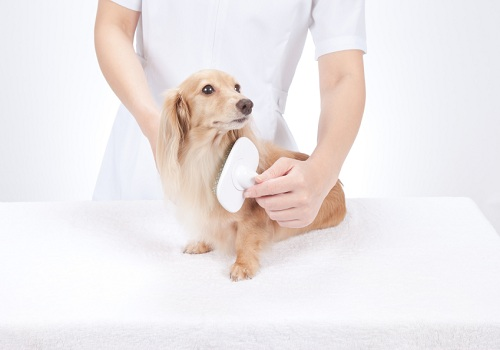
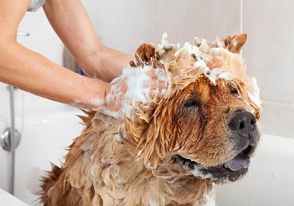
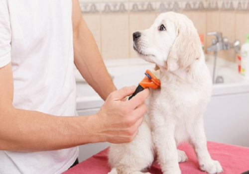
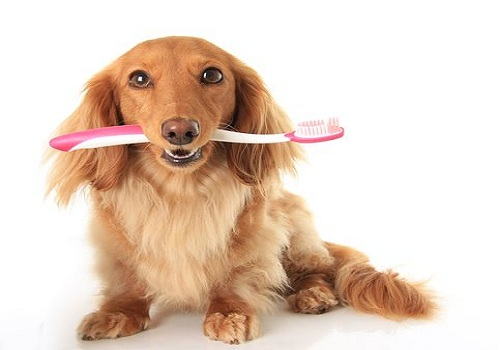

Grooming of Dogs




The coats of many breeds require trimming, cutting, or other attention. Styles vary by breed and discipline. While some hair removal has its origins in practical purposes, much is based on the taste of the owner, whether or not the dog will be shown, and what work the dog does.
A six-month-old Lhasa Apso before and after a visit to a professional groomer. The rubber grooming gloves and dog brushes are intended to drag loose hair from the short-coated dogs and are some of the most popular grooming tools amongst pet owners. They are easy to use, as using them basically means massaging the coat in firm strokes and have the advantage of being suitable for both wet and dry coats.
Some breeds of dog, such as the Lhasa Apso, do not shed fur but have hair that grows constantly. As such, the fur around the legs and belly can get very long and become matted and the hair around the eyes can impair the dog's vision. In such circumstances, hair trimming can be performed to keep the eyes clear of fur and keep the main body free of knots. However, some owners prefer breeds, such as the Lhasa, to have long, flowing coats that reach down to the floor and will undertake a greater brushing regime than is required for a dog that has its fur kept shorter.